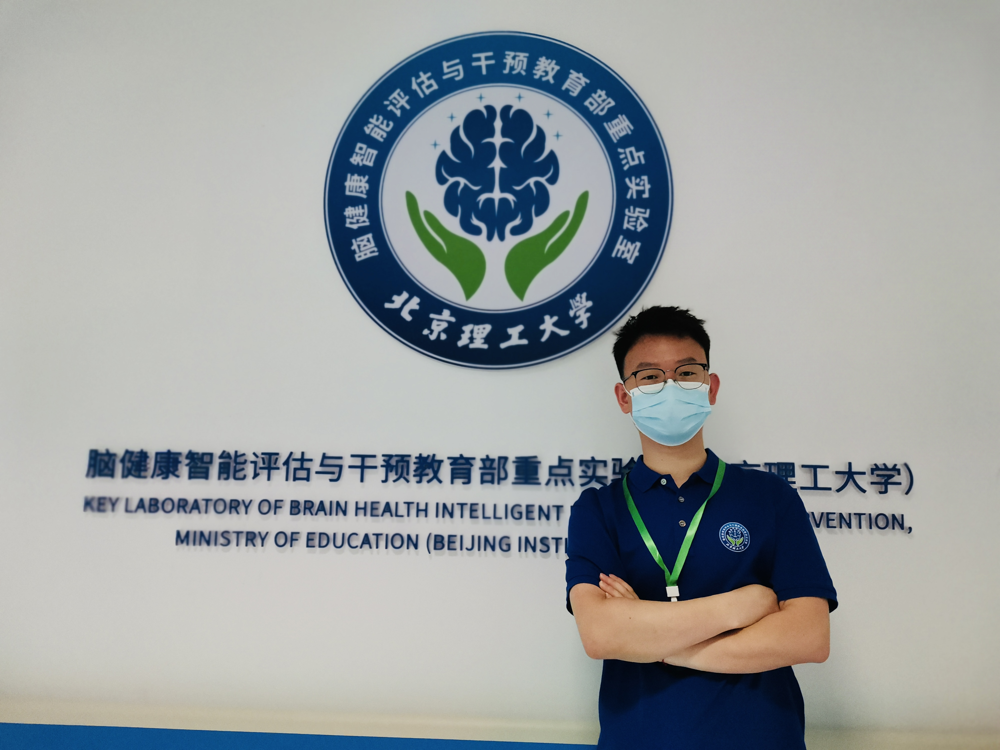

Wanyong Qiu
|


|
Wanyong Qiu (邱万勇). Post-doctoral fellow Waseda University Department of Computer Science and Engineering Address: Bldg. No.55, 3-4-1 Okubo-Nishi-Waseda, Shinjuku, Tokyo, 169-8555 Japan E-mail: w.iac25173@kurenai.waseda.jp CV(CN).pdf CV(EN).pdf |
 Github |
Github |
 Google Scholar |
Google Scholar |
 ResearchGate |
ResearchGate |
 CSDN
CSDN

Short Bio
I’m a postdoctoral fellow at the Faculty of Science and Engineering, Waseda University, working in Liu’s Lab under the supervision of Prof. Liu Jiang. Previously, I received my PhD degree from Beijing Institute of Technology in June 2025. I am a member of the Key Laboratory of Brain Health Intelligent Evaluation and Intervention (BIT), Ministry of Education, P. R. China, supervised by Prof. Bin Hu (Fellow, IEEE), Prof. Kun Qian and Prof. QunXi Dong.
Postdoc Lab
Liu Lab (led by Prof. Jiang Liu) focuses on integrating sensing, communication, and computing to build intelligent, end-to-end systems for real-world applications. The group’s research spans wireless sensing and networked sensing systems, multimodal sensing, edge/cloud collaborative AI, and applications such as autonomous driving, robotics, and healthcare monitoring. Current work includes development of wireless vital-sign sensing and IoT solutions, AI-driven time-series analysis for physiological signals, and edge-based/federated learning approaches for privacy-preserving sensing and inference. The lab emphasizes bridging algorithms, hardware, and deployment by building prototypes that combine signal processing, communication technologies, and machine learning for human–machine symbiosis.
PhD Lab
The Key Laboratory of Brain Health Intelligent Evaluation and Intervention of the Ministry of Education employs advanced technologies, including artificial intelligence, big data, ubiquitous computing, the Internet of Health Things (IoHT), and medical electronics, to achieve the comprehensive process of "Identification-Intervention-Treatment-Rehabilitation" for functional brain disorders. The laboratory focuses on developing innovative methods, technologies, and products for the diagnosis and treatment of functional brain disorders. It addresses critical challenges, including the scarcity of indicators, high subjectivity, low diagnostic accuracy, difficulty in evaluating treatment efficacy, and limited generalisability of solutions.
In brain medicine, Prof. Bin Hu introduced the concept of "Computational Psychophysiology" at the 431st Xiangshan Science Conference in 2012, pioneering a data-driven methodology for studying cognitive function and psychological states. This innovation transitioned mental health diagnosis and treatment technologies from being "Symptom-descriptive" to "Data-driven". At the 735th Xiangshan Science Conference in 2022, Prof. Hu proposed a future transformation of mental health diagnosis and treatment technologies from "Data-driven" to "Systematic Interpretation". This forward-looking approach places greater demands on IoHT systems, particularly those involving wearable devices and diagnostic and treatment technologies.
Prof. Kun Qian has been extensively involved in advancing theoretical research and technological applications of artificial intelligence and signal processing within the field of medical engineering. In 2020, he proposed and has been actively advancing the cutting-edge research direction of "Computer Audition for Healthcare (CA4H)". The key innovative contributions include: Intelligent body sound perception, Brain-inspired auditory methods and Intelligent audio intervention. These innovations advance the frontiers of AI and signal processing in healthcare, underscoring the practical potential of CA4H technologies to enhance human health.
Latest News 🔥


- [05/2025] 🎉Outstanding PhD Graduate, Beijing Institute of Technology, 2025
- [04/2025] 🎉A New Paper has been Published by IEEE JBHI!
- [11/2024] 🎉Outstanding Student Award, Beijing Institute of Technology, 2023–2024.
- [10/2024] 🎉A patent has been granted, "A heart sound monitoring system based on federated learning".
- [09/2024] 🎉A New Paper has been Published by AAAS CBS!